Redis
0.架构
- Redis基础
- Redis 入门
- 数据类型
- 通用命令
- Jedis
- Redis高级
- 持久化
- redis.conf
- 事务
- 集群
- Redis应用
- 企业级解决方案
1.Redis
1.1NoSQL介绍
- 网站崩溃现象来源：①海量用户②高并发
- 罪魁祸首——关系型数据库
- 性能瓶颈：磁盘IO性能低下
- 扩展瓶颈：数据关系复杂,扩展性差,不便于大规模集群
- 解决思路
- 降低磁盘IO次数,越低越好——内存存储
- 去除数据间关系，越简单越好——不存储关系，仅存储数据
NoSQL：即Not-OnlySQL(泛指非关系型的数据库）- 定位：作为关系型数据库的补充
- 作用：应对基于海量用户和海量数据前提下的数据处理问题。
- 特征：
- 可扩容，可伸缩
- 大数据量下高性能
- 灵活的数据模型
- 高可用
- 常见Nosql数据库：
- Redis
- memcache
- HBase
- MongoDB
- 电商场景解决方案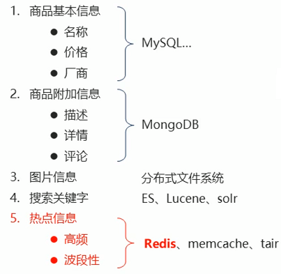
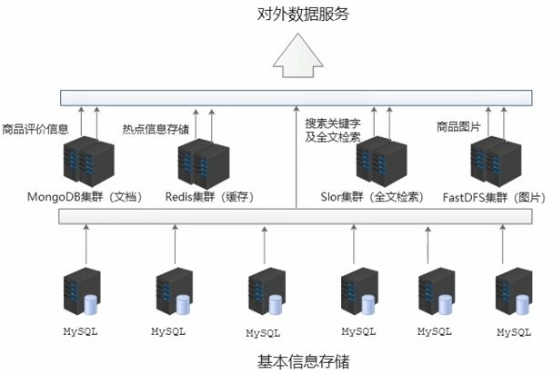
1.2Redis简介
Redis (Remote Dictionary Server)是一个开源的高性能键值对(key-value) 数据库
特征
- 数据间没有必然的关联关系
- 内部采用单线程机制进行工作
- 高性能。官方提供测试数据, 50个并发执行100000个请求读的速度是110000次/s，写的速度是81000次/s。
- 多数据类型支持
- 字符串类型——string
- 列表类型——list
- 散列类型——hash
- 集合类型——set
- 有序集合类型——sorted_set
- 持久化支持。可以进行数据灾难恢复（不是主要功能）
应用
- 为热点数据加速查询(主要场景)， 如热点商品、热点新闻、热点资讯、推广类等高访问量信息等
- 任务队列，如秒杀、抢购、购票排队等
- 即时信息查询，如各位排行榜、各类网站访问统计、公交到站信息、在线人数信息(聊天室、网站)、设备信号等
- 时效性信息控制，如验证码控制、投票控制等
- 分布式数据共享，如分布式集群架构中的session分离
- 消息队列
- 分布式锁
1.3Redis下载/安装
Windows：
Redis-x64-3.2.100.zip绿色版，解压即可
解压文件
- 核心文件
redis-server.exe——服务器启动命令redis-cli.exe——命令行客户端redis.windows.conf——redis核心配置文件redis-benchmarkexe——性能测试工具redis-check- aof.exe——AOF文件修复工具redis-check-dump.exe——RDB文件检查工具(快照持久化文件)
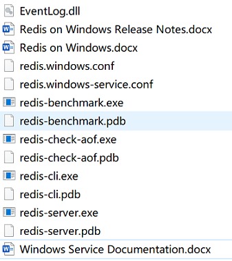
- 核心文件
Redis启动
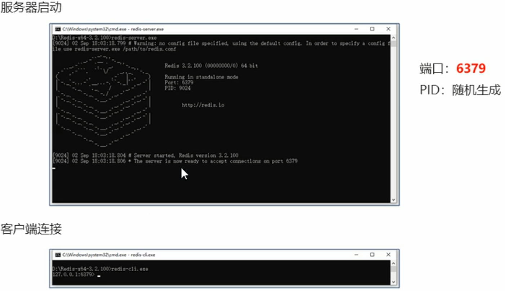
1.4Redis的基本操作
1.4.1信息添加
功能:设置key，value数据
1
set key value
1.4.2信息添加
功能:根据key查询对应的value,如果不存在,返回空(nil)
1
get key
1.4.3清除屏幕信息
功能:清除屏幕中的信息
1
clear
1.4.4帮助信息
1 | help [CMD] |
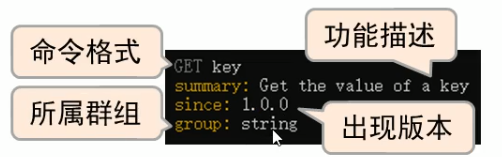
1.4.5退出客户端命令行模式
功能:退出客户端
1
2
3quit
exit
<ESC>
1.5Redis数据类型
Redis自身是一个Map，其中所有的数据都是采用key：value的形式存储- 数据类型指的是value的类型【存储的数据类型】，key部分永远都是字符串
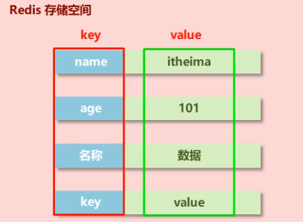
- Redis数据类型(5种常用）
| Redis | 类比Java |
|---|---|
| string | String |
| hash | HashMap |
| list | LinkedList |
| set | HashSet |
| sorted_set | TreeSet |
1.5.1String类型
- 存储的数据：单个数据，最简单的数据存储类型，也是最常用的数据存储类型
- 存储数据的格式：一个存储空间保存一个数据
- 存储内容：通常使用字符串，如果字符串以整数的形式展示，可以作为数字操作使用
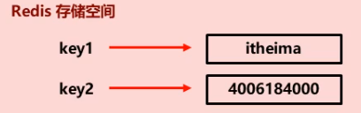
添加/修改数据
1
set key value
获取数据
1
get key
删除数据
1
2
3del key
# (integer) 0 删除失败
# (integer) 1 删除成功添加/修改多个数据
1
mset key1 value1 key2 value2 ..
获取多个数据
1
mget key1 key2 ..
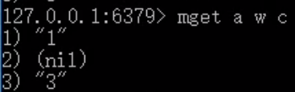
获取数据字符个数（字符串长度）
1
2strlen key
# (integer) [N长度]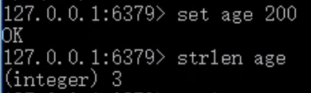
追加信息到原始信息后部（如果原始信息存在则追加，否则新建）
1
append key value
注意事项
数据操作不成功的反馈与数据正常操作之间的差异
①表示运行结果是否成功- (integer)0 →false 失败
- (integer)1 →true成功
②表示运行结果值
- (integer)3 →3 3个
- (integer)1 →1 1个
数据未获取到——(nil)等同于null
数据最大存储量——512MB
应用场景1
大型企业级应用中，分表操作是基本操作，使用多张表存储同类型数据，但是对应的主键id必须保证统一性, 不能重复。MySQL数据库并不具有类似的机制，那么如何解决?
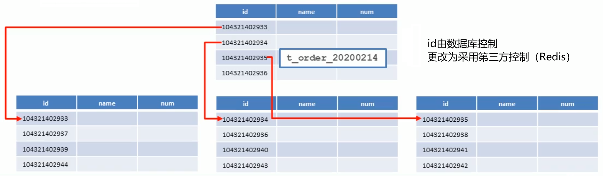
答：Redis用于控制数据库表主键id，为数据库表主键提供生成策略，保障数据库表的主键唯一性。此方案适用于所有数据库，且支持数据库集群
设置数值数据增加指定范围的值
1
2
3incr key
incrby key increment [increment可以为负]
incrbyfloat key increment设置数值数据减少指定范围的值
1
2decr key
decrby key increment- String在Redis内部存储默认就是一个字符串，当遇到增减类操作incr，decr时会转成数值型进行计算
- redis所有的操作都是原子性的，采用单线程处理所有业务，命令是一个一个执行的，因此无需考虑并发带来的数据影响。
- 注意:按数值进行操作的数据，如果原始数据不能转成数值，或超越了redis数值上限范围，将报错。【9223372036854775807（Java中Long型数据最大值，Long.MAX_VALUE）】
应用场景2
微信每4小时只能投1票/商品热门期维持3天自动取消热门/自动控制热点新闻的时效性
答：Redis控制数据的生命周期，通过数据是否失效控制业务行为，适用于所有具有时效性限定控制的操作
设置数据具有指定的生命周期
1
2setex key seconds value
psetex key milliseconds value超时则抹去Id，存在则禁止重复投票
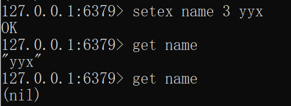
应用场景3
高频访问信息显示控制，例如新浪微博大V主页显示粉丝数与微博数量
在redis中为大V用户设定用户信息，以用户主键和属性值作为key，后台设定定时刷新策略即可
- 数据库中的热点数据命名惯例【大部分数据还是从数据库中来】
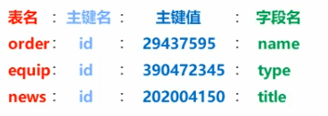
1
2
3set user:id:3506728370:fans 12210947
set user:id:3506728370:blogs 6164
set user:id:3506728370:focus 83在redis中以json格式存储大V用户信息，定时刷新(也可以使用hash类型)
1
set user:id:3506728370 {id:3506728370, fans:12210862, blogs:6164, focus:83}
答：redis应用于各种结构型和非结构型高热度数据访问加速
1.5.2Hash类型
对象类数据用String类型以json格式存储，如果具有较频繁的更新需求操作会显得笨重
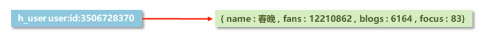
新的存储需求：对一系列存储的数据进行编组，方便管理，典型应用是存储对象信息
需要的存储结构: 一个存储空间保存多个键值对数据【感觉就像是Map套Map】
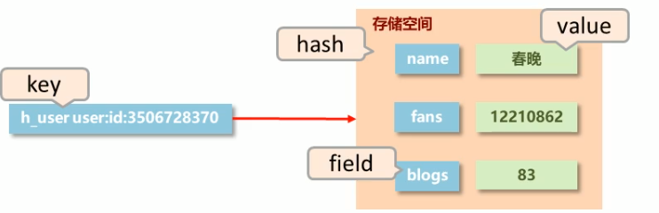
hash类型：底层使用哈希表结构实现数据存储
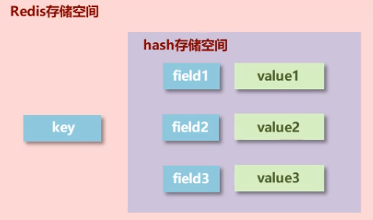
- 如果field数量较少，存储结构优化为类数组结构
- 如果field数量较多，存储结构使用HashMap结构
添加/修改数据
1
hset key field value
获取数据
1
2
3
4hget key field
hgetall key
hkeys key [获取的到的field字段]
hvals key [获取的到的value字段]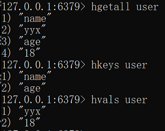
删除数据
1
hdel key field1 [field2]
添加/修改多个数据
1
hmset key field1 value1 field2 val
获取多个数据
1
hmget key field1 field2
获取哈希表中字段的数量
1
hlen key
获取哈希表中是否存在指定的字段
1
hexists key field
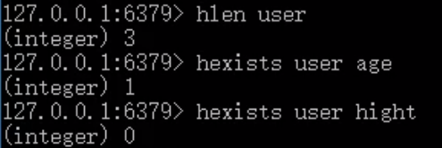
设置指定字段的数值数据增加指定范围的值
1
2hincrby key field increment
hincrbyfloat key field increment不存在则添加，否则不变
1
hsetnx key field value
注意事项
- hash类型下的value只能存储字符串，不允许存储其他数据类型，不存在嵌套现象。如果数据未获取到，对应的值为(nil)
- 每个hash可以存储23^2-1个键值对
- hash类型十分贴近对象的数据存储形式，并且可以灵活添加删除对象属性。但hash设计初衷不是为了存储大量对象而设计的，切记不可滥用，不可以将hash作为对象列表使用
- hgetall操作可以获取全部属性，如果内部field过多，遍历整体数据效率就很会低，有可能成为数据访问瓶颈
应用场景4
电商网站购物车设计与实现
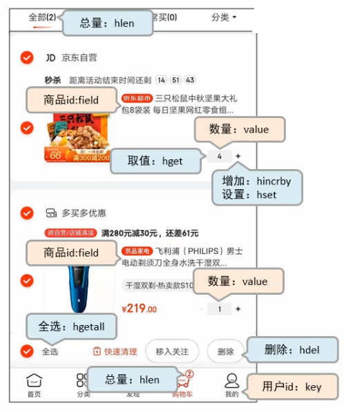
问题：当前仅仅是将数据存储到了redis中，并没有起到加速的作用，商品信息还需要根据商品id二次查询商品信息的数据库
方案：每条购物车中的商品记录保存成两条field
1
2
3field1专用于保存购买数量
命名格式:商品id:nums
保存数据:数值1
2
3field2专用于保存购物车中显示的信息，包含文字描述，图片地址，所属商家信息等
命名格式:商品id:info
保存数据: json问题：商品id:info将因为用户购买相同商品，而重复大量的商品信息
方案：将商品信息单独做成hash
问题：我们一开始不能将所有商品信息都导入Redis，但是用一个加一个则与之前没有区别
方案：
1
hsetnx key field value
答：应用于购物车数据存储设计
应用场景5
双11活动日,销售手机充值卡的商家对移动、联通、电信的30元、50元、 100元商品推出抢购活动，每种商
品抢购上限1000张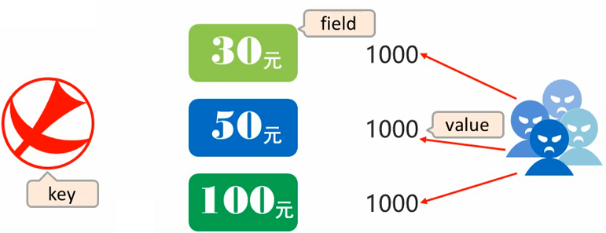
答：redis应用于抢购，限购类、限量发放优惠卷、激活码等业务的数据存储设计
补充：String存储对象（Json） VS Hash存储对象
String存在对象讲究整体性，以读为主
Hash存储对象讲究分散性，以写为主
1.5.3List类型
数据存储需求：存储多个数据，并对数据进入存储空间的顺序进行区分
需要的存储结构：一个存储空间保存够个数据，且通过数据可以体现进入顺序
list类型：保存多个数据，底层使用双向链表存储结构实现
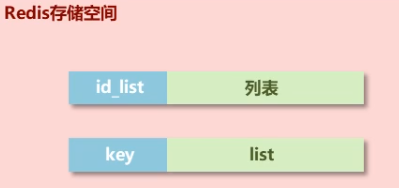
添加/修改数据
1
2lpush key value1 [value2] ....
rpush key value1 [value2] ....获取数据
1
2
3lrange key start stop
lindex key index
llen key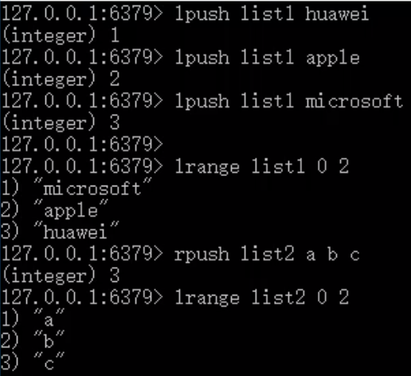
获取并移除数据
1
2lpop key
rpop key规定时间内获取并移除数据【规定时间内阻塞 队列中有就移除 没有就算了】
1
2blpop key1 [key2] timeout [block]
brpop key1 [key2] timeout移除指定数据
1
lrem key count value
注意事项
- list中保存的数据都是string类型的，数据总容量是有限的，最多23^2- 1个元素(4294967295)
- list具有索引的概念，但是操作数据时通常以队列的形式进行入队出队操作，或以栈的形式进行入栈出栈操作
- 获取全部数据操作结束索引设置为-1
- list可以对数据进行分页操作，通常第一页的信息来自于list, 第2页及更多的信息通过数据库的形式加载
应用场景6
- 微信朋友圈点赞，要求按照点赞顺序显示点赞好友信息如果取消点赞，移除对应好友信息
- 答：redis应用于具有操作先后顺序的数据控制
应用场景7
- twitter、新浪微博、腾讯微博中个人用户的关注列表需要按照用户的关注顺序进行展示,粉丝列表需要将最近关注的粉丝列在前面
- 新闻、资讯类网站如何将最新的新闻或资讯按照发生的时间顺序展示
- 企业运营过程中,系统将产生出大量的运营数据,如何保障多台服务器操作日志的统一顺序输出
- 答：redis应用于依赖list的数据具有顺序的特征对信息进行管理，使用队列模型解决多路信息汇总合并的问题，使用栈模型解决最新消息的问题
1.5.5Set类型
- 新的存储需求：存储大量的数据，在查询方面提供更高的效率
- 需要的存储结构：能够保存大量的数据，高效的内部存储机制，便于查询
- set类型：与hash存储结构完全相同，仅存储键，不存储值(nil) ，且值不允许重复的
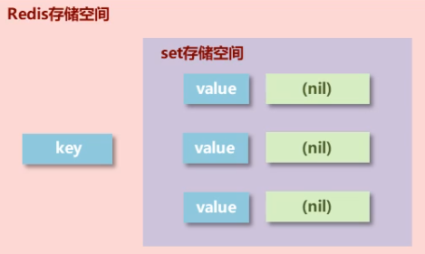
添加数据
1
sadd key member1 [member2]
获取全部数据
1
smembers key
删除数据
1
srem key member1 [member2]
获取集合数据总量
1
scard key
判断集合中是否包含指定数据
1
sismember key member
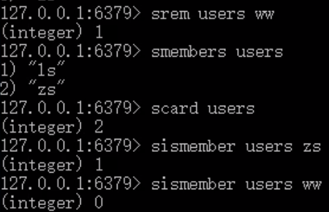
随机获取集合中指定数量的数据
1
srandmember key [count]
随机获取集合中的某个数据并将该数据移出集合
1
spop key
求两个集合的交、并、差集
1
2
3sinter key1 [key2]
sunion key1 [key2]
sdiff key1 [key2]求两个集合的交、并、差集并存储到指定集合中
1
2
3sinterstore destination key1 [key2]
sunionstore destination key1 [key2]
sdiffstore destination key1 [key2]将指定数据从原始集合中移动到目标集合中
1
smove source destination member
注意事项
- set类型不允许数据重复，如果添加的数据在set中已经存在，将只保留一份
- set虽然与hash的存储结构相同，但是无法启用hash中存储值的空间
应用场景8
- 后期为了增加用户的活跃度、兴趣点，必须让用户 对其他信息类别逐渐产生兴趣，增加客户留存度，实现随机推送
- 答：redis应用于随机推荐类信息检索，例如热点歌单推荐，热点新闻推荐，热卖旅游线路，应用APP推荐，大V推荐等
应用场景9
- 答：redis应用于同类信息的关联搜索，二度关联搜索，深度关联搜索
- 显示共同关注(一度)
- 显示共同好友(一度)
- 由用户A出发，获取到好友用户B的好友信息列表(一度)
- 由用户A出发，获取到好友用户B的购物清单列表(二度)
- 由用户A出发，获取到好友用户B的游戏充值列表(二度)
应用场景10
- PV:网站被访问次数，可通过刷新页面提高访问量
- UV:网站被不同用户访问的次数,可通过cookie统计访问量, 相同用户切换IP地址，UV不变
- IP:网站被不同IP地址访问的总次数，可通过IP地址统计访问量，相同IP不同用户访问，IP不变
- 建立string类型数据，利用incr统计日访问量(PV)
- 建立set模型，记录不同cookie数量(UV)
- 建立set模型，记录不同IP数量(IP)
- 答：redis应用于同类型数据的快速去重
1.5.6Sorted_set类型
新的存储需求：数据排序有利于数据的有效展示，需要提供一种可以根据自身特征进行排序的方式
需要的存储结构：新的存储模型，可以保存可排序的数据
sorted_set类型：在set的存储结构基础上添加可排序字段
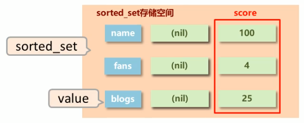
添加数据
1
zadd key score1 memberl [score2 member2 ]
获取全部数据
1
2zrange key start stop [WITHSCORES]
zrevrange key start stop [WITHSCORES]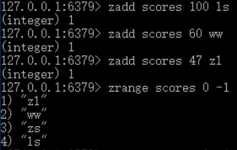
删除数据
1
zrem key member [member ...]
按条件获取数据
1
2zrangebyscore key min max [WITHSCORES] [LIMIT OFFSET COUNT]
zrevrangebyscore key max min [WITHSCORES]条件删除数据
1
2zremrangebyrank key start stop
zremrangebyscore key min max注意:
- min与max用于限定搜索查询的条件
- start与stop用于限定查询范围，作用于索引，表示开始和结束索引
- offset与count用于限定查询范围，作用于查询结果，表示开始位置和数据总量
获取集合数据总量
1
2zcard key
zcount key min max集合交、并操作【默认合并相加】
1
2zinterstore destination numkeys key [key ...]
zunionstore destination numkeys key [key . ..]获取数据对应的索引(排名)
1
2zrank key member
zrevrank key memberscore值获取与修改
1
2zscore key member
zincrby key increment member注意事项
- score保存的数据存储空间是64位，如果是整数范围是-9007199254740992~9007199254740992
- score保存的数据也可以是一个双精度的double值，基于双精度浮点数的特征，可能会丢失精度，使用时候要慎重
- sorted_set底层存储还是基于set结构的，因此数据不能重复，如果重复添加相同的数据，score值将被反复覆盖，保留最后一次修改的结果
业务场景11
- 票选广东十大杰出青年，各类综艺选秀海选投票
- 各类资源网站TOP10(电影，歌曲，文档，电商，游戏等)
- 聊天室活跃度统计
- 游戏好友亲密度
- 答：redis应用于计数器组合排序功能对应的排名
业务场景12
网站会定期开启投票、讨论，限时进行，逾期作废。如何有效管理此类过期信息。
答：redis 应用于定时任务执行顺序管理或任务过期管理
1.6Redis通用命令
1.6.1Key通用命令
key是一个字符串， 通过key获取redis中保存的数据
获取key的类型
1
type key
获取key是否存在
1
exists key
删除指定key
1
del key
为指定key设置有效期
1
2
3
4expire key seconds
pexpire key milliseconds
expireat key timestamp [时间戳的形式 time命令获取]
pexpireat key milliseconds-timestamp获取key的有效时间
1
2
3
4
5ttl key
# (integer) -2 过期
# (integer) -1 没设置有效期
# (integer) N 有效期
pttl key切换key从时效性转换为永久性
1
2
3persist key
# (integer) 0 失败
# (integer) 1 成功查询key
* 匹配任意数量的任意符号
? 配合一个任意符号
[] 匹配个指定符1
keys [pattern]
1
2
3
4
5
6keys * 查询所有
keys it * 查询所有以it开头
keys *heima 查询所有以he ima结尾
keys ??heima 查 询所有前面两个字符任意，后面以he ima结尾
keys user:? 查询所有以user:开头，最后一个字符任意
keys u[st]er:1 查询所有以u开头，以er:1结尾， 中间包含一个字母，s或t为key改名
1
2rename key newkey [可能覆盖同名key]
renamenx key newkey [不会覆盖同名key]对所有key排序
1
sort key [只排序不保存]
其他key通用操作
1
help @generic
配置文件设置密码
1
2config set requirepass <password>
config get requirepass客户端发送命令设置密码
1
requirepass <password>
启动客户端设置密码
1
redis-cli –a <password>
1.6.2数据库通用命令
redis为每个服务提供有16个数据库，编号从0到15【默认使用select 0】
每个数据库之间的数据相互独立
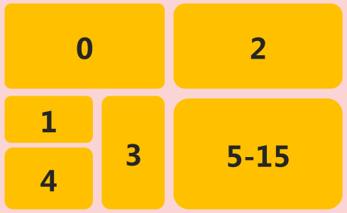
没有大小 共有同一空间
测试服务器是否连通
1
ping
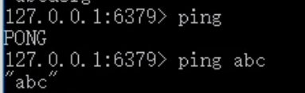
切换数据库
1
select [index]
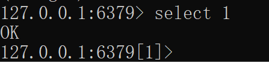
数据移动
- 目标数据库必须不存在才能成功
1
move key dbindex
数据清除
1
2
3dbsize [查看key数量]
flushdb [删除本库]
flushall [删除所有0-15库]
自动重写
自动重写触发条件设置
1
2auto-aof-rewrite-min-size [size]
auto-aof-rewrite-percentage [percentage]自动重写触发比对参数（ 运行指令info Persistence获取具体信息 ）
1
2aof_current_size
aof_base_size自动重写触发条件
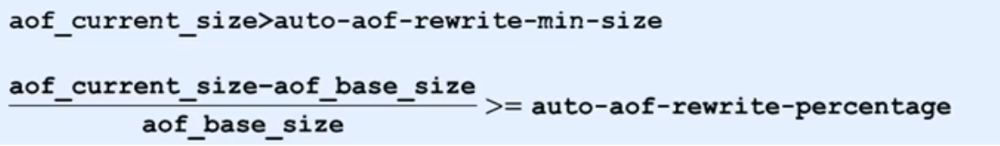
s的高可用，同时实现数据冗余备份。
- 提供数据方：master 主服务器，主节点，主库，主客户端
- 接收数据方：slave 从服务器，从节点，从库，从客户端
- 需要解决的问题： 数据同步
- 核心工作： master的数据复制到slave中
主从复制
- 主从复制即将master中的数据即时、有效的复制到slave中
- 特征：一个master可以拥有多个slave，一个slave只对应一个master
- 职责：
- master:①写数据 ②执行写操作时，将出现变化的数据自动同步到slave ③读数据（可忽略）
- slave:①读数据 ②写数据（禁止）
- 作用
- 读写分离：master写、slave读，提高服务器的读写负载能力
- 负载均衡：基于主从结构，配合读写分离，由slave分担master负载，并根据需求的变化，改变slave的数量，通过多个从节点分担数据读取负载，大大提高Redis服务器并发量与数据吞吐量
- 故障恢复：当master出现问题时，由slave提供服务，实现快速的故障恢复
- 数据冗余：实现数据热备份，是持久化之外的一种数据冗余方式
- 高可用基石：基于主从复制，构建哨兵模式与集群，实现Redis的高可用方案
{kind=link}
原文作者: 掘金木匠
原文链接: http://goldcarpenter.github.io/2020/03/26/Redis_Part1/
版权声明: 转载请注明出处(必须保留作者署名及链接)